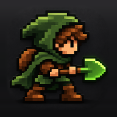

If Spade doesn't open by itself, tap the button.
Still not opening? Copy the link, then in Spade go to Settings, then Paste a family link. Don't have Spade yet? Ask whoever sent this for the TestFlight invite.